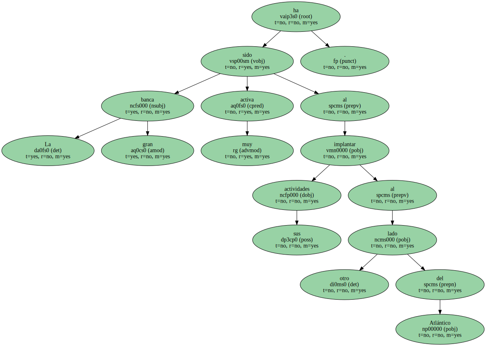
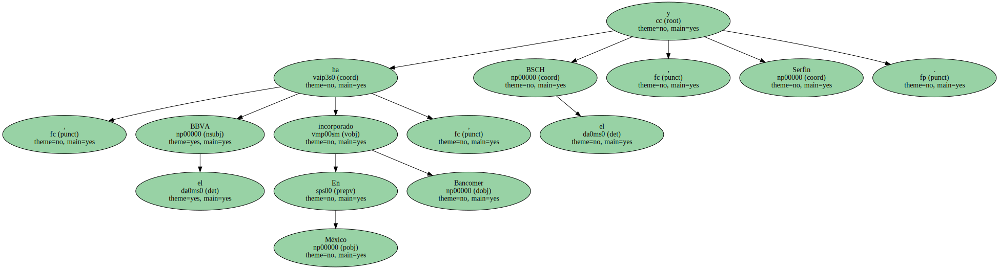
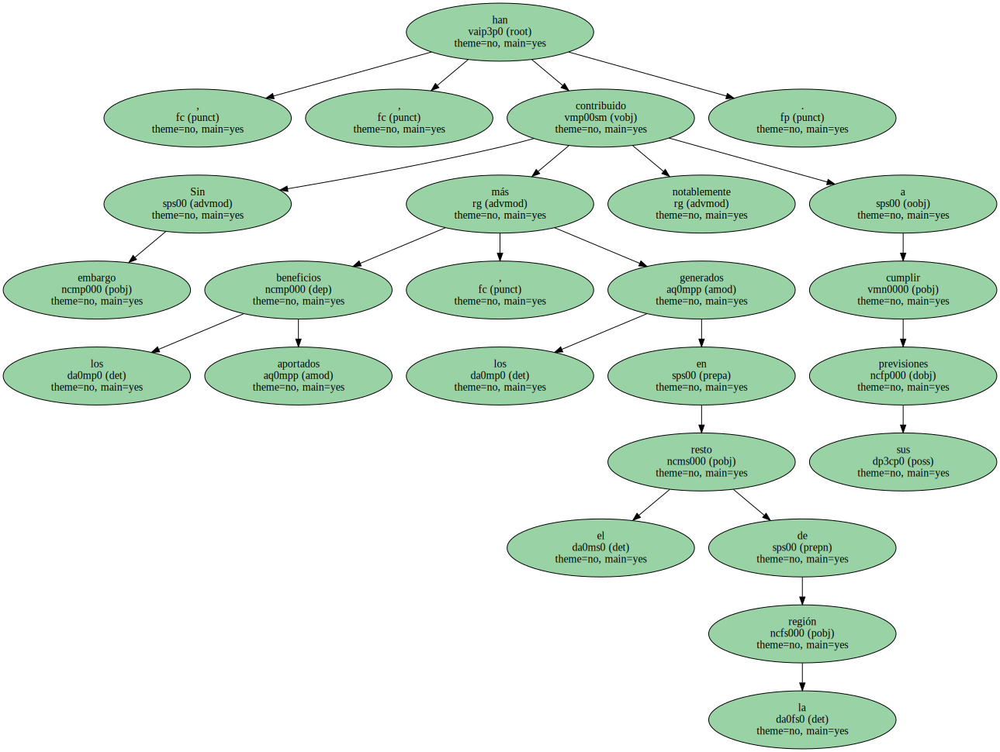
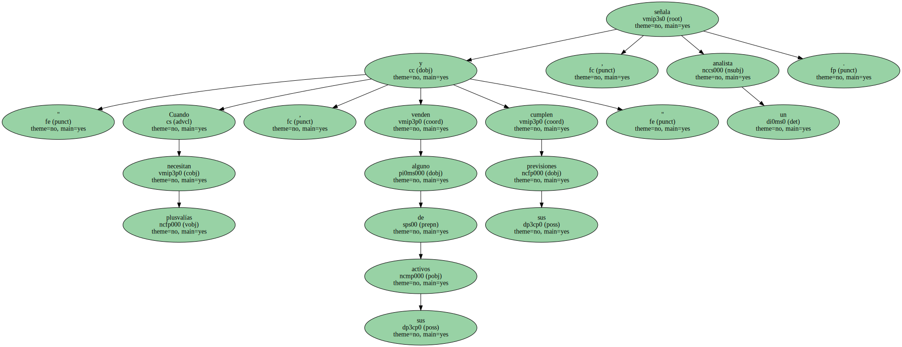

La gran banca ha sido muy activa al implantar sus actividades al otro lado del Atlántico.
BBVA y BSCH han integrado en sus estructuras bancos de la región.

En México , el BBVA ha incorporado Bancomer , y el BSCH , Serfin.
Ambas adquisiciones tuvieron un coste elevado.
Sin embargo , los beneficios aportados , más los generados en el resto de la región , han contribuido notablemente a cumplir sus previsiones.
" Cuando necesitan plusvalías , venden alguno de sus activos y cumplen sus previsiones " , señala un analista.
